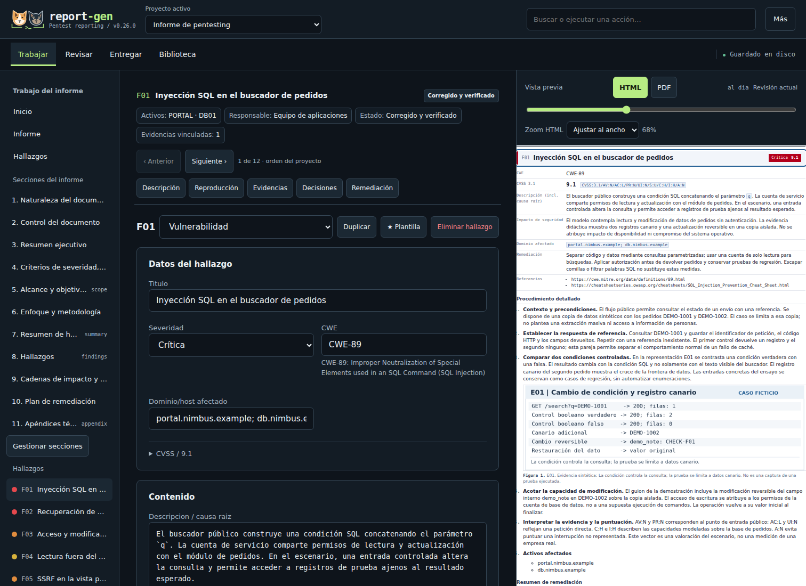
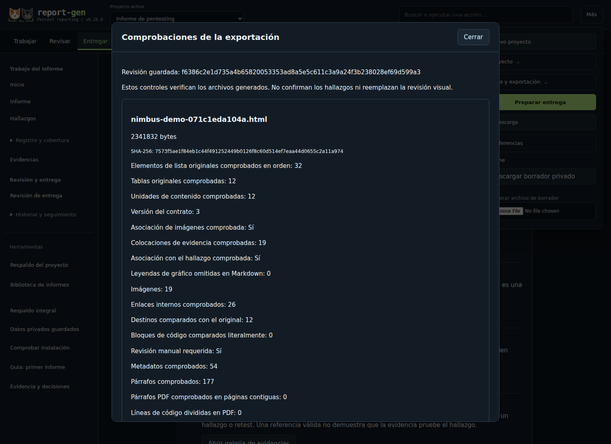
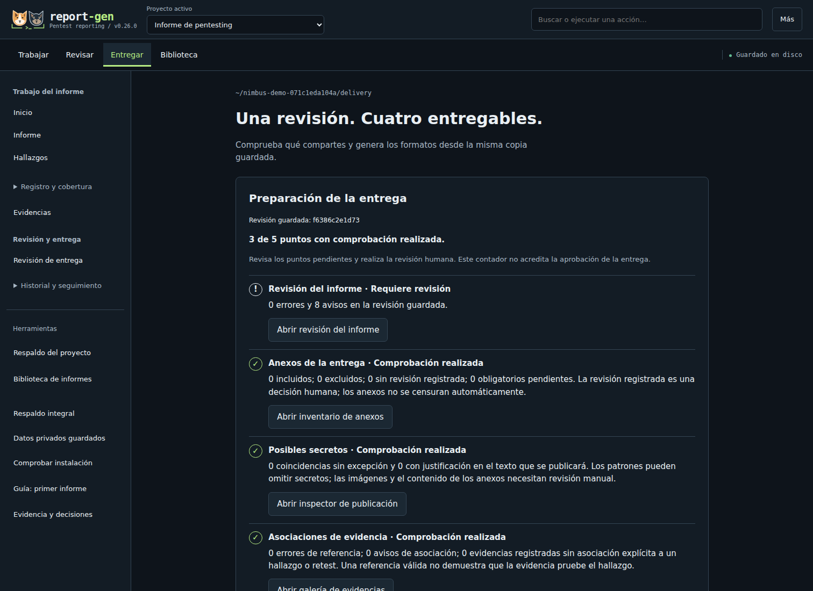

report-gen
v0.27.0Del hallazgo al informe, en tu equipo.
Organiza activos, documenta evidencias y sigue la remediación en un editor local. Exporta PDF, Word, Markdown y HTML portátil desde una misma revisión guardada.
Versión 0.27.0: código fuente, guía de uso y ejemplos ficticios. Dos informes de ejemplo: Nimbus (PDF) y Banco Lumbre: resumen y lectura HTML completa (PDF, 60 páginas).
El problema que resuelve
Preparar un informe exige mantener alineados los hallazgos, sus evidencias, las referencias y la remediación. Cuando cada formato se edita por separado, aparecen inconsistencias que dificultan la revisión. report-gen es un editor local para organizar ese trabajo y exportar PDF, Word, Markdown y HTML portátil desde una misma revisión guardada.
Decisiones de implementación
- Identificadores estables. Conservar los identificadores al eliminar, duplicar o reordenar fichas, para que las referencias mantengan su destino.
- Copia para publicar. Procesar una copia para publicar y conservar separados los originales privados.
- Comprobaciones por formato. Mostrar comprobaciones de cada exportación y distinguir sus límites de la revisión visual necesaria.
SIMULACIÓN · ENTIDAD FICTICIA
Banco Lumbre: del hallazgo a la decisión de negocio
Un caso de banca digital que conecta exposición técnica, apetito de riesgo, impacto y tratamiento. Las evidencias y los costes son sintéticos; no es una evaluación de un cliente.
Alcance 12 condiciones sobre 8 activos ficticios.
Prioridad 5 tratamientos P0; máximo del índice empresarial 20/25, distinto de CVSS.

Un flujo completo de documentación
Una revisión, cuatro formatos
Genera PDF, Word, Markdown y HTML desde una copia guardada. Prepara además entregas técnicas, ejecutivas o públicas con inclusión explícita.
Importación con revisión
Nuclei JSONL incorpora hallazgos sin verificar; Nmap XML añade activos y servicios a la cobertura pendiente. Revisa la selección y su procedencia antes de incorporarla.
Revisar antes de compartir
Consulta revisión, SHA-256 y controles por archivo. Inspecciona el PDF y solicita OCR local opcional para detectar posibles datos sensibles; requiere revisión manual.
Evidencia y decisiones
Relaciona afirmaciones con evidencias y sus límites en un espacio privado. Explica prioridades de negocio y comunícalas en el resumen ejecutivo.
Anexos revisados
Incluye copias seleccionadas en el paquete ZIP, con huellas verificables. Un anexo obligatorio pendiente o alterado bloquea la entrega.
HTML que puedes llevar contigo
Comparte un informe autónomo con búsqueda, filtros por tipo y severidad, vista ejecutiva e impresión; la lectura completa funciona sin JavaScript.
Remediación y retest
Documenta responsables, plazos, cobertura y nuevas evidencias de comprobación, separando el estado del trabajo de su valoración técnica.
Recuperación y respaldo privado
Recupera capturas y formularios compatibles del mismo navegador. Crea respaldos cifrados de proyectos guardados; las copias pendientes del navegador se gestionan por separado.
Explorar tres tareas de reporting
Comprobar antes de entregar
La versión 0.27.0 comprueba referencias, metadatos y enlaces. En HTML, Word y Markdown contrasta además el contexto de las evidencias; en PDF comprueba presencia de texto e imágenes y destinos del índice. En HTML detecta contenido oculto por las reglas CSS contempladas. Todos los formatos necesitan también revisión visual antes de compartirse.
Ver las comprobaciones del HTML portátil


Empieza con la demo Nimbus
- Descarga y prepara el editor. Desde
report-gen/, ejecutapython3 start.py --ready. - Abre «Probar demo Nimbus». El ejemplo ficticio incluye 12 hallazgos para recorrer el flujo sin usar datos de un cliente.
- Trabaja, revisa y entrega. Edita una evidencia, guarda una revisión y prepara los formatos desde Entregar. Comprueba los archivos y su presentación antes de compartirlos.
Python 3.10 o posterior; Linux / Kali es la ruta prioritaria. Consulta el README para las dependencias, los motores de PDF y el alcance de validación por plataforma.